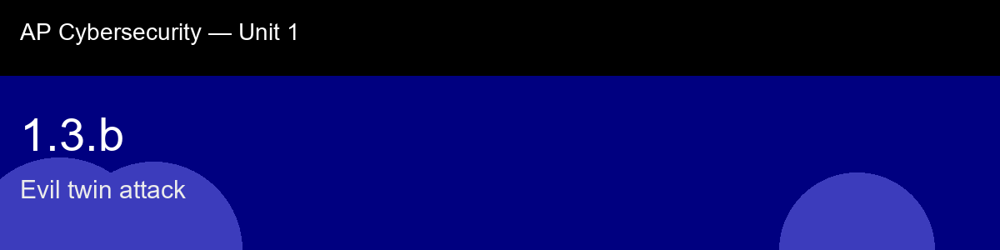

1.3.b recap, Evil twin attack
Nice work today. Here's what to lock in:
- Recap handout:
post-lecture-handout.docx
- Simulation: SimLab
- Self-check quiz: due before next class
The big picture: Notice how directly this connects back to 1.3.a: setting up an evil twin requires no zero-day, no custom exploit, nothing beyond a laptop's built-in hotspot feature, which is exactly why it's a low-skilled attacker's favorite tool despite sounding technically sophisticated. That gap between "sounds scary" and "costs nothing to execute" is worth remembering: the attacks worth worrying about most on public Wi-Fi are rarely the exotic ones, they're the cheap, high-yield ones that exploit a blind spot everyone shares.
Key terms to lock in:
- SSID (Service Set Identifier), the human-readable name of a Wi-Fi network (e.g., "CafeGuest").
- BSSID (Basic Service Set Identifier), the hardware MAC address of the radio broadcasting the network; each physical access point has a unique BSSID.
- Evil twin, a rogue access point broadcasting the same SSID as a legitimate network to intercept victim traffic.
- Man-in-the-middle (MitM), an attack where the adversary secretly relays and can read or modify communications between two parties.
- SSL stripping, a MitM technique that downgrades an HTTPS connection to plain HTTP without the user noticing, exposing traffic to eavesdropping.
- Captive portal, a web page shown to new network users, often requiring authentication; attackers use fake versions to harvest credentials.
Common misconceptions -- don't fall for these:
- "If I see HTTPS in my browser, the connection is safe even on public Wi-Fi." → SSL stripping can remove HTTPS before your browser receives the page. Always check for HTTPS and be suspicious if it is absent where you expected it.
- "The same SSID appearing twice means my device is glitching." → Multiple BSSIDs for one SSID is normal in enterprise Wi-Fi, but an unexpected BSSID for a small public network is a strong indicator of an evil twin.
- "Evil twin attacks need sophisticated equipment." → Any device that can broadcast Wi-Fi, including a smartphone, can be configured as an evil twin in minutes.
Learning objective(s): 1.3.B

## 1.3.b recap, Evil twin attack
Nice work today. Here's what to lock in:
- Recap handout: `post-lecture-handout.docx`
- Simulation: SimLab
- Self-check quiz: due before next class
**The big picture:** Notice how directly this connects back to 1.3.a: setting up an evil twin requires no zero-day, no custom exploit, nothing beyond a laptop's built-in hotspot feature, which is exactly why it's a low-skilled attacker's favorite tool despite sounding technically sophisticated. That gap between "sounds scary" and "costs nothing to execute" is worth remembering: the attacks worth worrying about most on public Wi-Fi are rarely the exotic ones, they're the cheap, high-yield ones that exploit a blind spot everyone shares.
**Key terms to lock in:**
- **SSID (Service Set Identifier)**, the human-readable name of a Wi-Fi network (e.g., "CafeGuest").
- **BSSID (Basic Service Set Identifier)**, the hardware MAC address of the radio broadcasting the network; each physical access point has a unique BSSID.
- **Evil twin**, a rogue access point broadcasting the same SSID as a legitimate network to intercept victim traffic.
- **Man-in-the-middle (MitM)**, an attack where the adversary secretly relays and can read or modify communications between two parties.
- **SSL stripping**, a MitM technique that downgrades an HTTPS connection to plain HTTP without the user noticing, exposing traffic to eavesdropping.
- **Captive portal**, a web page shown to new network users, often requiring authentication; attackers use fake versions to harvest credentials.
**Common misconceptions -- don't fall for these:**
- "If I see HTTPS in my browser, the connection is safe even on public Wi-Fi." → SSL stripping can remove HTTPS before your browser receives the page. Always check for HTTPS and be suspicious if it is absent where you expected it.
- "The same SSID appearing twice means my device is glitching." → Multiple BSSIDs for one SSID is normal in enterprise Wi-Fi, but an unexpected BSSID for a small public network is a strong indicator of an evil twin.
- "Evil twin attacks need sophisticated equipment." → Any device that can broadcast Wi-Fi, including a smartphone, can be configured as an evil twin in minutes.
**Learning objective(s):** 1.3.B